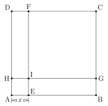
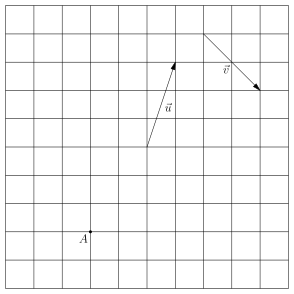
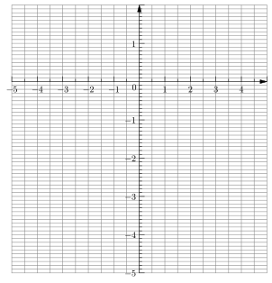

Contrôle
Exercice 1
Questions:
Soit \(f\) la fonction qui correspond à l'aire du carré \(ABCD\).
Montrer que \(f(x) = x^2 + 20x + 100\).
Quelle est l'aire du carré \(ABCD\) pour \(x=4\) mètres ?
Vous utiliserez la question précédente pour répondre.
- Donner la forme factorisée de l'expression \(x^2+20x+100\) à l'aide d'une identité remarquable. Vous préciserez la valeur de \(a\) et de \(b\), ainsi que l'identité remarquable utilisée.
Soit \(g\) la fonction qui correspond au périmètre du carré \(ABCD\).
Donner l'expression simplifiée de la fonction \(g\).
Pour quelle valeur de \(x\) le périmètre du carré \(ABCD\) vaut-il \(51,2\) mètres ?
Présentez rigoureusement votre résolution d'équation.

Données:
Soit \(A, B, C, D, E, F, G, H, I\) neufs points tels que :
- \(ABCD\) soit un carré,
- \(H\) appartienne au coté \([AD]\),
- \(G\) appartienne au coté \([BC]\),
- \(E\) appartienne au coté \([AB]\),
- \(F\) appartienne au coté \([DC]\),
- \(I\) soit à l'intersection des droites \((HG)\) et \((FE)\),
- \(AE = x\) où \(x\) est un réel positif,
- \(AEIH\) est un carré,
- \(HD = EB = 10\) m.
Exercice 2
- Directement sur l'énoncé, représenter le vecteur \(\vec{u} + \vec{v}\)
- Représenter le point \(B\) tel que \(\overrightarrow{AB} = 2\vec{u}\).
- Représenter le point \(C\) tel que \(\overrightarrow{AC} = -\vec{v}\).

Exercice 3
On définit la fonction \(f\) par l'expression : \[ f(x) = \frac{4x - 2}{x + 10} \]
Compléter le tableau de valeurs suivant directement dans l'énoncé. Vous donnerez soit une valeur exacte pour les nombres décimaux, soit une fraction irréductible.
\(x\) -5 -4 -3 -2 -1 0 1 2 3 4 5 \(f(x)\) - À l'aide de la figure 1, et des calculs effectués à la question précédente, représenter la courbe de la fonction \(f\).
- Entre \(-5\) et \(5\), quels sont les antécédents par la fonction \(f\) de \(2\) ? Il peut y en avoir aucun, mais dans tous les cas, vous devez justifier votre réponse.

Figure 1 : Repère